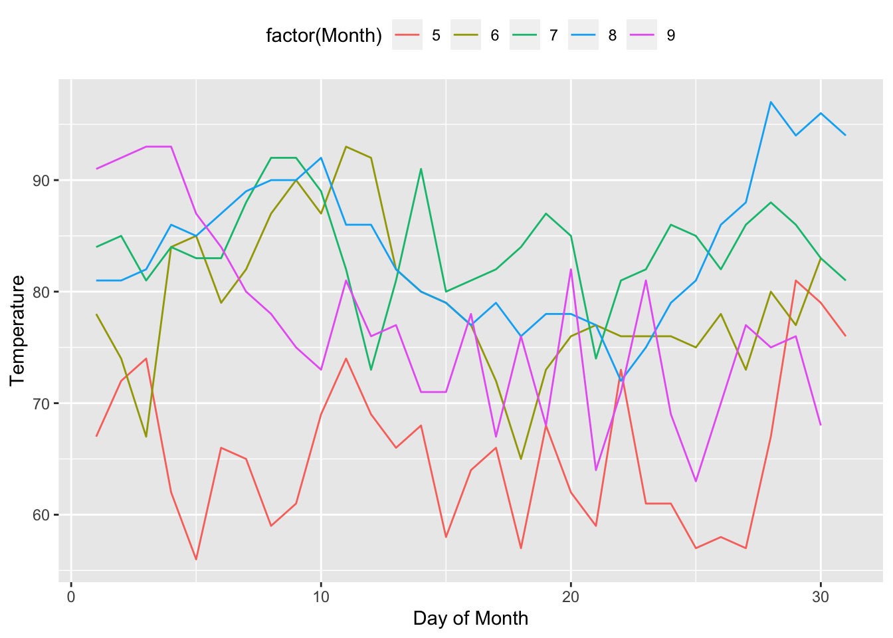

gganimate
RLT
Fecha de la ultima revisión
## [1] "2024-02-05"#if(!require(devtools)) install.packages("devtools")
#devtools::install_github("dgrtwo/gganimate")
#devtools::install_github("yihui/animation")

#install.packages("rgl", dependencies=TRUE)
library(tidyverse)
library(gganimate)
library(rgl)
library(gapminder)
library(ggplot2)
library(animation)
library(gt)
library(datasets)
library(png)
library(gifski)
#install.packages("rgl", dependencies = TRUE)El paquete gganimate extiende el paquete de ggplot2 y implementa unas funciones para animar gráficos que típicamente estuviese estática. El paquete fue desarrollado por Pedersen y Robinson (2017).Siempre puede ir al siguiente enlace para tener más información y otros ejemplos. https://gganimate.com/articles/gganimate.html. Note que antes de utilizar este modulo se asume que se conozca la estructura de la creación de gráficos con ggplot2.
Los datos provienen del paquete gapminder y el archivo gapminder. Estos datos representa la expectativa de supervivencia en diferentes 142 países entre 1952 y 2007. Aquí observamos las primeras 6 filas del archivo. Para facilitar el trabajo, reducimos el archivo a un subgrupo de años (1952 a 1962).
## # A tibble: 6 × 6
## country continent year lifeExp pop gdpPercap
## <fct> <fct> <int> <dbl> <int> <dbl>
## 1 Afghanistan Asia 1952 28.8 8425333 779.
## 2 Afghanistan Asia 1957 30.3 9240934 821.
## 3 Afghanistan Asia 1962 32.0 10267083 853.
## 4 Afghanistan Asia 1967 34.0 11537966 836.
## 5 Afghanistan Asia 1972 36.1 13079460 740.
## 6 Afghanistan Asia 1977 38.4 14880372 786.## [1] 1952 1957 1962 1967 1972 1977 1982 1987 1992 1997 2002 2007Primero creamos un gráfico de puntos sin animación o sea estático. En el eje de X representa el GDP per capita en cada país, y en el eje de Y la supervivencia. El tamaño del punto es relativo el tamaño del país. La escala en el eje de X fue cambiado a una logarítmica usando scale_x_log10(). Aunque es difícil percibir la diferencia cada país tiene su proprio color.
p <- ggplot(
gapminder2,
aes(x = gdpPercap, y=lifeExp, size = pop, colour = country)) +
geom_point(show.legend = FALSE, alpha = 0.8)+
scale_size(range = c(.2, 12)) +
scale_x_log10() +
labs(x = "GDP per capita", y = "Expectativa de Vida")
p
Gráficos con animación:
Para incluir las transiciones en tiempo se usa la función transition_time. El largo de transición sera corresponde as la diferencia entre la variable de tiempo (en este casa “Time”).
La variable frame_time añade arriba una leyenda del tiempo de transición. Note que se usa la función labs y se añade el titulo y lo que hay entre los corchetes es la variable del cambio en tiempo.


Crear facet animados.
Igual que para los gráficos de ggplot2 se puede crear una gráica por cada variable discreta. Para crear un gráfico por grupo y observar el de patrones de cambio en tiempo por continente se añade facet_wrap. En este próximo gráfico se produce un por cada continente.
Animación de los ejes: ejes variables
En este caso lo que observamos es que la leyenda en en x varia con los años, y la de y la dejamos fija. Si se usa view_follow(fixed_x = TRUE), la leyenda en y variaría con el cambio en GDP per capita y la de x seria fija. Si queremos que los dos ejes varían con los datos se usa view_follow(), sin poner nada dentro de los paréntesis.

Observar transiciones entre valores
La función shadow_wake es para representar un efecto de sobre o dirreccón por donde ocurre los cambios. Se puede seleccionar el tamaño de la disminución y la opacidad de la sombra. El largo de la cola no es
La duración de la estela no se da en cuadros absolutos, ya que eso haría que la animación sea susceptible a cambios en la velocidad de fotogramas. En cambio, se da por proporción de la longitud total de la animación. Por consecuencia el wake_length varia entre 0 a 1 en relación con el total de numero de periodo de tiempo (frames). En otra palabra más cerca el valor se acerca a 1, más largo sera la cola.
The length of the wake is not given in absolute frames as that would make the animation susceptible to changes in the framerate. Instead it is given as a proportion of the total length of the animation.
p + transition_time(year) +
labs(title = "Year: {frame_time}") +
shadow_wake(wake_length = 0.8, alpha = FALSE)
Visualizar los datos originales en el fondo
Con la función shadow_mark se puede ver los datos originales. Tanto los datos anteriores y futuros se pueden demostrar con diferentes estilos. Por ejemplo con el siguiente script shadow_mark(past = FALSE, future = TRUE) se observaría los datos futuros y no del pasado. El alternativa basica shadow_mark() es igual a shadow_mark(past = TRUE, future = FALSE)
final_animation = p + transition_time(year) +
labs(title = "Year: {frame_time}") +
shadow_mark(alpha = 0.3, size = 0.5)
animation=final_animationData from Covid-19
Located at https://ourworldindata.org/covid-deaths
- Ejercicio: Producir un gráfico con gganimate sobre el cambio de casos de COVID-19 en tiempo en diferentes paises
- Seleccionar variables del archivo de covid-deaths que UD. le interesa con la función select() de tidyverse.
- remover los NA
- puede seleccionar un subgrupos de datos como de un continente solamente, o paises selecionado especificos
- hacer un “facet_wrap” por continentes o otra variable
- Puede cambiar el nombre de las leyenda en y y x.
- Puede modificar el tamaño del punto que representa el paises por una variable.
library(readr)
library(readr)
owid_covid_data <- read_csv("COVID_DATA/owid-covid-data_2022.csv")
owid_covid_data## # A tibble: 181,463 × 67
## iso_code continent location date total_cases new_cases
## <chr> <chr> <chr> <date> <dbl> <dbl>
## 1 AFG Asia Afghanistan 2020-02-24 5 5
## 2 AFG Asia Afghanistan 2020-02-25 5 0
## 3 AFG Asia Afghanistan 2020-02-26 5 0
## 4 AFG Asia Afghanistan 2020-02-27 5 0
## 5 AFG Asia Afghanistan 2020-02-28 5 0
## 6 AFG Asia Afghanistan 2020-02-29 5 0
## 7 AFG Asia Afghanistan 2020-03-01 5 0
## 8 AFG Asia Afghanistan 2020-03-02 5 0
## 9 AFG Asia Afghanistan 2020-03-03 5 0
## 10 AFG Asia Afghanistan 2020-03-04 5 0
## # ℹ 181,453 more rows
## # ℹ 61 more variables: new_cases_smoothed <dbl>, total_deaths <dbl>,
## # new_deaths <dbl>, new_deaths_smoothed <dbl>, total_cases_per_million <dbl>,
## # new_cases_per_million <dbl>, new_cases_smoothed_per_million <dbl>,
## # total_deaths_per_million <dbl>, new_deaths_per_million <dbl>,
## # new_deaths_smoothed_per_million <dbl>, reproduction_rate <dbl>,
## # icu_patients <dbl>, icu_patients_per_million <dbl>, hosp_patients <dbl>, …## [1] "iso_code"
## [2] "continent"
## [3] "location"
## [4] "date"
## [5] "total_cases"
## [6] "new_cases"
## [7] "new_cases_smoothed"
## [8] "total_deaths"
## [9] "new_deaths"
## [10] "new_deaths_smoothed"
## [11] "total_cases_per_million"
## [12] "new_cases_per_million"
## [13] "new_cases_smoothed_per_million"
## [14] "total_deaths_per_million"
## [15] "new_deaths_per_million"
## [16] "new_deaths_smoothed_per_million"
## [17] "reproduction_rate"
## [18] "icu_patients"
## [19] "icu_patients_per_million"
## [20] "hosp_patients"
## [21] "hosp_patients_per_million"
## [22] "weekly_icu_admissions"
## [23] "weekly_icu_admissions_per_million"
## [24] "weekly_hosp_admissions"
## [25] "weekly_hosp_admissions_per_million"
## [26] "total_tests"
## [27] "new_tests"
## [28] "total_tests_per_thousand"
## [29] "new_tests_per_thousand"
## [30] "new_tests_smoothed"
## [31] "new_tests_smoothed_per_thousand"
## [32] "positive_rate"
## [33] "tests_per_case"
## [34] "tests_units"
## [35] "total_vaccinations"
## [36] "people_vaccinated"
## [37] "people_fully_vaccinated"
## [38] "total_boosters"
## [39] "new_vaccinations"
## [40] "new_vaccinations_smoothed"
## [41] "total_vaccinations_per_hundred"
## [42] "people_vaccinated_per_hundred"
## [43] "people_fully_vaccinated_per_hundred"
## [44] "total_boosters_per_hundred"
## [45] "new_vaccinations_smoothed_per_million"
## [46] "new_people_vaccinated_smoothed"
## [47] "new_people_vaccinated_smoothed_per_hundred"
## [48] "stringency_index"
## [49] "population"
## [50] "population_density"
## [51] "median_age"
## [52] "aged_65_older"
## [53] "aged_70_older"
## [54] "gdp_per_capita"
## [55] "extreme_poverty"
## [56] "cardiovasc_death_rate"
## [57] "diabetes_prevalence"
## [58] "female_smokers"
## [59] "male_smokers"
## [60] "handwashing_facilities"
## [61] "hospital_beds_per_thousand"
## [62] "life_expectancy"
## [63] "human_development_index"
## [64] "excess_mortality_cumulative_absolute"
## [65] "excess_mortality_cumulative"
## [66] "excess_mortality"
## [67] "excess_mortality_cumulative_per_million"library(tidyverse)
owid_covid_data2= owid_covid_data %>%
select(date, location, total_deaths, total_cases_per_million, continent, total_deaths_per_million, population) %>% # Seleccionar aquí sus variables del data frame
drop_na() # remover los "NA". Esto remueve toda la fila si una de las variables tiene un "NA"
head(owid_covid_data2) # Visualizar su nuevo data frame## # A tibble: 6 × 7
## date location total_deaths total_cases_per_million continent
## <date> <chr> <dbl> <dbl> <chr>
## 1 2020-03-23 Afghanistan 1 1.00 Asia
## 2 2020-03-24 Afghanistan 1 1.05 Asia
## 3 2020-03-25 Afghanistan 1 1.86 Asia
## 4 2020-03-26 Afghanistan 2 2.01 Asia
## 5 2020-03-27 Afghanistan 2 2.28 Asia
## 6 2020-03-28 Afghanistan 2 2.66 Asia
## # ℹ 2 more variables: total_deaths_per_million <dbl>, population <dbl>## [1] "Asia" "Europe" "Africa" "North America"
## [5] "South America" "Oceania"Transiciones graduales
Con la función transition_reveal los datos aparece gradualmente en el gráfico
Usamos otro conjunto de datos del archivo airquality que se encuentra en el paquete datasets Primero creamos un gráfico estático (sin animación), el día del mes (day), la temperatura del día (Temp) y una linea para cada mes (mayo a septiembre) con la función group.
## Ozone Solar.R Wind Temp Month Day
## 1 41 190 7.4 67 5 1
## 2 36 118 8.0 72 5 2
## 3 12 149 12.6 74 5 3
## 4 18 313 11.5 62 5 4
## 5 NA NA 14.3 56 5 5
## 6 28 NA 14.9 66 5 6p <- ggplot(airquality,
aes(Day, Temp, group = Month, color = factor(Month))) +
geom_line() +
labs(x = "Day of Month", y = "Temperature") +
theme(legend.position = "top")
p
Ahora animamos el gráfico en el eje de x con la variable de Day, añadiendo transition_reveal(Day)
Anadiendo un punto a la linea
Se puede añadir un punto al principio de las lineas


Animación con gráficos de barras
La transiciones también pueden ser producida con otros geoms por ejemplo con geom_col. El primer paso es tener un data frame que representa los valores de cada columna/barra. Entonces el primer paso aquí fue de calcular el promedio de temperatura por mes en un nuevo data frame que llamamos temp.promedio.
Preparación de los datos
## Ozone Solar.R Wind Temp Month Day
## 1 41 190 7.4 67 5 1
## 2 36 118 8.0 72 5 2
## 3 12 149 12.6 74 5 3
## 4 18 313 11.5 62 5 4
## 5 NA NA 14.3 56 5 5
## 6 28 NA 14.9 66 5 6temp.promedio <- airquality %>%
select(Day, Temp) %>%
group_by(Day) %>%
summarise(Temp2 = mean(Temp, na.rm = TRUE))
temp.promedio## # A tibble: 31 × 2
## Day Temp2
## <int> <dbl>
## 1 1 80.2
## 2 2 80.8
## 3 3 79.4
## 4 4 81.8
## 5 5 79.2
## 6 6 79.8
## 7 7 80.8
## 8 8 81.2
## 9 9 81.6
## 10 10 82
## # ℹ 21 more rowsGráfico de barra estático
Ahora creamos un gráfico estático de los datos con geom_col.
p <- ggplot(temp.promedio, aes(Day, Temp2, fill=Day)) +
geom_col() +
scale_fill_distiller(palette = "Blues", direction = 1) +
theme_minimal() +
theme(
panel.grid = element_blank(),
panel.grid.major.y = element_line(color = "white"),
panel.ontop = TRUE
)
pAñadiendo efecto de transición en las columnas
El efecto de transición de un mes al otro se añade con la función transition_states(). Si uno añade solamente esta función aparece solamente una barra a la vez.

Añadiendo efecto de transición y shadow

Para más ejemplos de como usar gganimate ver este enlace.